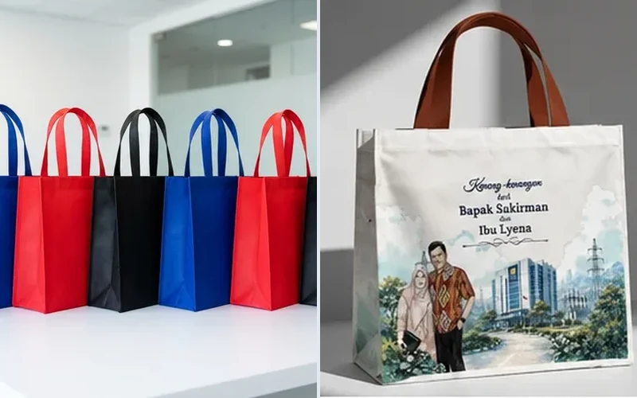

Spunbond vs Blacu: Perbedaan Bahan untuk Goodie Bag

Spunbond dan blacu berbeda pada karakter bahan serta cara penggunaannya dalam konstruksi tas. Spunbond merupakan nonwoven sintetis, sedangkan blacu umumnya merujuk pada kain tenun kapas alami. Pilihan sebaiknya mempertimbangkan isi paket, tampilan visual, teknik sablon logo, serta rencana penggunaan tas setelah acara selesai.
📌 Ringkasan Inti Spunbond vs Blacu:
- Spunbond adalah bahan sintetis non-woven berbasis polypropylene, sedangkan Blacu adalah kain tenun katun murni unbleached ramah lingkungan.
- Dari segi harga, Spunbond 40–60% lebih terjangkau, menjadikannya pilihan utama untuk pengadaan massal ribuan unit.
- Dari segi estetika dan umur pakai, Blacu memiliki serat vintage artistik, dapat dicuci berulang kali, dan memiliki rasio pemakaian harian jauh lebih tinggi.
- Kapasitas beban Blacu mencapai 6–8 kg, lebih unggul dibanding Spunbond standar yang optimal menampung 3–5 kg.
- Tabel perbandingan head-to-head memudahkan panitia memilih material yang tepat sesuai jenis kegiatan dan ekspektasi audiens.
🚚 Ketentuan Layanan & Pengiriman: Produksi langsung dari workshop konveksi kami di Kota Malang, melayani pengiriman kilat ke seluruh 38 provinsi di Indonesia. Minimum pemesanan mulai dari 50 pcs dengan garansi 100% ganti baru untuk cacat produksi. Pelajari ketentuan lengkap di halaman Syarat & Ketentuan Pemesanan serta panduan Alur Pemesanan Resmi.
1. Perbandingan Head-to-Head dalam Spesifikasi Setara
Ketika mempertimbangkan kedua opsi ini dalam pemilihan bahan goodie bag, gunakan ukuran tas dan daftar isi muatan yang sama ketika meminta sampel fisik kepada vendor. Membandingkan tas spunbond berukuran kecil tanpa alas denganblacu berukuran besar dengan gusset tidak akan menghasilkan perbandingan yang akurat.
Periksa bobot tas kosong, luas area cetak logo yang proporsional, kekuatan sambungan jahitan tepi, serta kenyamanan tali handle saat digenggam tangan. Perbedaan harga tidak dapat disimpulkan dari nama material semata karena mutu serat, kerapatan benang, dan teknik pengerjaan jahitan masing-masing konveksi dapat sangat berbeda.

2. Menentukan Pilihan Berdasarkan Prioritas Acara
Kedua bahan memiliki kekuatan masing-masing yang harus diselaraskan dengan tujuan strategis kegiatan Anda:
- Pilih Spunbond Jika: Fokus utama panitia adalah distribusi massal untuk acara berdurasi satu hari (pameran, jalan sehat, festival publik, kampanye), memerlukan variasi warna kain yang beragam sesuai tema brand, dan memiliki anggaran terbatas per tas.
- Pilih Blacu Jika: Acara bertema ramah lingkungan, etnik, pernikahan, atau seminar edukasi di mana panitia menginginkan tas tersebut disimpan dan dipakai berulang kali oleh peserta untuk membawa belanjaan atau barang kuliah.
- Pertimbangkan Kanvas Jika: Membutuhkan tas dengan ketebalan ekstra kokoh untuk menampung laptop berat atau merchandise eksekutif tingkat VIP; pelajari panduannya di artikel goodie bag kanvas.
3. Checklist Sampel Fisik yang Wajib Diminta ke Vendor
Gunakan tabel matriks evaluasi berikut saat mengajukan permintaan penawaran harga kepada produsen:
Tabel Komparasi & Spesifikasi Teknis
| Aspek Evaluasi | Spunbond | Blacu |
|---|---|---|
| Struktur Umum | Nonwoven (serat sintetis polipropilena) | Kain tenun (serat kapas alami unbleached) |
| Spesifikasi Material | Gramasi aktual (65, 75, 100 gsm) dan metode sambung (press vs jahit) | Komposisi katun, kerapatan tenun, dan gramasi aktual (120–160 gsm) |
| Teknik Aplikasi Logo | Uji teknik sablon manual rubber pada lembaran nonwoven | Uji daya serap tinta sablon rubber atau transfer DTF pada serat kapas |
| Daya Bawa Beban | Uji angkat beban nyata pada tas jadi (maksimal 2–4 kg) | Uji angkat beban nyata pada tas jadi (dapat mencapai 5–7 kg) |
| Klaim Ramah Lingkungan | Dapat didaur ulang pada fasilitas pengolah plastik sintetis | Serat alami biodegradable yang dapat terurai secara biologis |
Pertanyaan Umum (FAQ)
Konsultasikan Perbandingan Spunbond vs Blacu
Kirim jumlah, spesifikasi, file logo, kota tujuan, dan tanggal penerimaan melalui WhatsApp untuk meminta pemeriksaan kebutuhan serta penawaran resmi.
Konsultasi via WhatsApp (+62 821-3108-7971)
Ditulis oleh Devaliana Tensa
Praktisi konveksi tas, garment merchandiser, dan founder workshop Goodie Bag Malang dengan pengalaman lebih dari 8 tahun dalam produksi tas seminar, goodie bag pameran, dan suvenir custom korporat di Indonesia.
Panduan Bahan Terkait